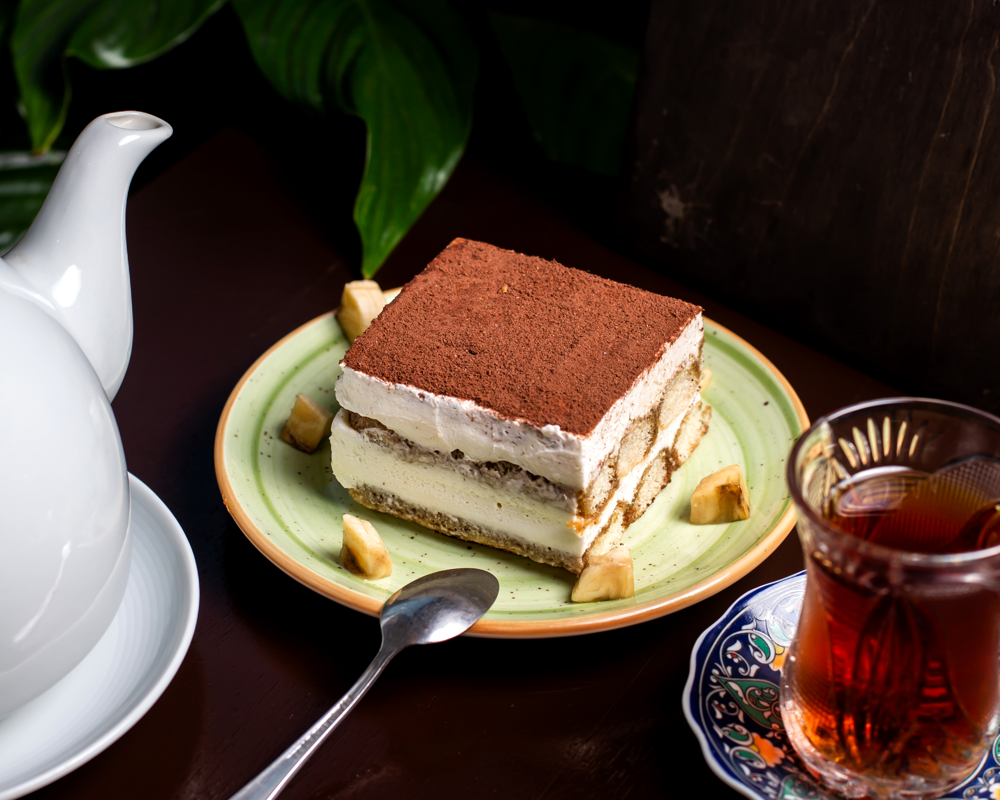

Recipe for Tiramisu

Description
This easy tiramisu recipe makes a classic Italian dessert
with ladyfingers dipped in coffee liqueur and sweet mascarpone mixture.
Ingredients
- 6 egg yolks
- 1 1/4 cups white sugar
- 1 1/4 cups mascarpone cheese
- 1 3/4 cups heavy whipping cream
- 2(12 ounce) packages ladyfingers
- 1/3 cup coffe flavored liqueur
- 1 teaspoon unsweetened cocoa powder, for dusting
- 1(1 ounce) square semisweet chocolate
Steps
- Gather all ingredients.
- Combine egg yolks and sugar in the top of a double boiler, over boiling
water. Reduce heat to low, and cook for about 10 minutes, stirring
constantly. Remove from heat and whip yolks until thick and lemon-
colored.
- Add mascarpone to whipped yolks. Beat until combined.
- In a separate bowl, whip cream to stiff peaks. Gently fold into
yolk mixture and set aside.
- Split the lady fingers in half, and line the bottom and sides of a large
glass bowl. Brush with coffee liqueur.
Home